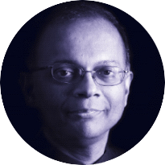

<div class="views">
    <div class="view view-main">

        <div class="pages navbar-fixed">
            <div class="page">

                <div class="navbar">
                    <div class="navbar-inner">
                        <div class="left"><a href="#" class="open-panel link icon-only"><i class="material-icons">menu</i></a></div>
                        <div class="center">Core Team</div>
                    </div>
                </div>

                <div class="page-content">
                    <div class="list-block">
                        <div class="container">
                            <div class="img-cont">
                                
                            </div>
                            <h3>Chan Heng Fai</h3>
                            <h4>Chairman and Co-founder</h4>
                            <ul>
                                <li>- Director of Holista Colltech Limited</li>
                                <li>- Skilled at restructuring and financial engineering</li>
                                <li>- Turning around the ailing American Pacific Bank and sold it to the Federal Reserve</li>
                                <li>- Sees potential in healthcare nutritional products</li>
                                <li>- Entrepreneur with global footprint</li>
                                <li>- More info at www.fai185.com</li>
                            </ul>
                            <div class="img-cont">
                                
                            </div>
                            <h3>Rajen M, PhD</h3>
                            <h4>CEO and Co-founder</h4>
                            <ul>
                                <li>- Executive Chairman and CEO of Holista Colltech Limited</li>
                                <li>- Pharmacist with Doctorate in Holistic Medicine with specialization on effects of carbohydrates on the metabolism</li>
                                <li>- Founder of Holista Group of Companies</li>
                                <li>- Authored the National Nature Products Blueprint for Malaysia</li>
                                <li>- Works in Holistic Medicine and R&amp;D in Nature Products</li>
                                <li>- Was Health Columist (The Star, The Edge, New Straits Times)</li>
                                <li>- Mission to build an ethical network marketing company</li>
                            </ul>
                            <div class="img-cont">
                                
                            </div>
                            <h3>Dr. Joe Ahrens</h3>
                            <h4>Scientific Advisor</h4>
                            <ul>
                                <li>- Doctorate</li>
                                <li>- Former Director of the Florida Citrus Board</li>
                                <li>- Founder of ATM Metabolics</li>
                                <li>- Inventor of EMULIN<sup>®</sup></li>
                                <li>- Nobel Peace Prize Nominee 2015 and 2016</li>
                            </ul>
                            <div class="img-cont">
                                
                            </div>
                            <h3>Kosta Gara</h3>
                            <h4>Corporate Advisor</h4>
                            <ul>
                                <li>3x Amazon Best Selling Author &amp; Co-Author</li>
                                <li>Has worked in direct sales organizations, spanning to more than 30 countries</li>
                                <li>His most recent venture in the energy drink market resulted in accumulative sales in excess of $300 million</li>
                                <li>Has been featured in Forbes, Inc., CNBC, Wall Street Journal, Grupo Formula, Cronica, and Televisa, the largest broadcasting station in Mexico</li>
                                <li>Keynote speaker at over 450 conferences worldwide</li>
                            </ul>
                        </div>
                    </div>
                </div>
            </div>
        </div>
    </div>
</div>